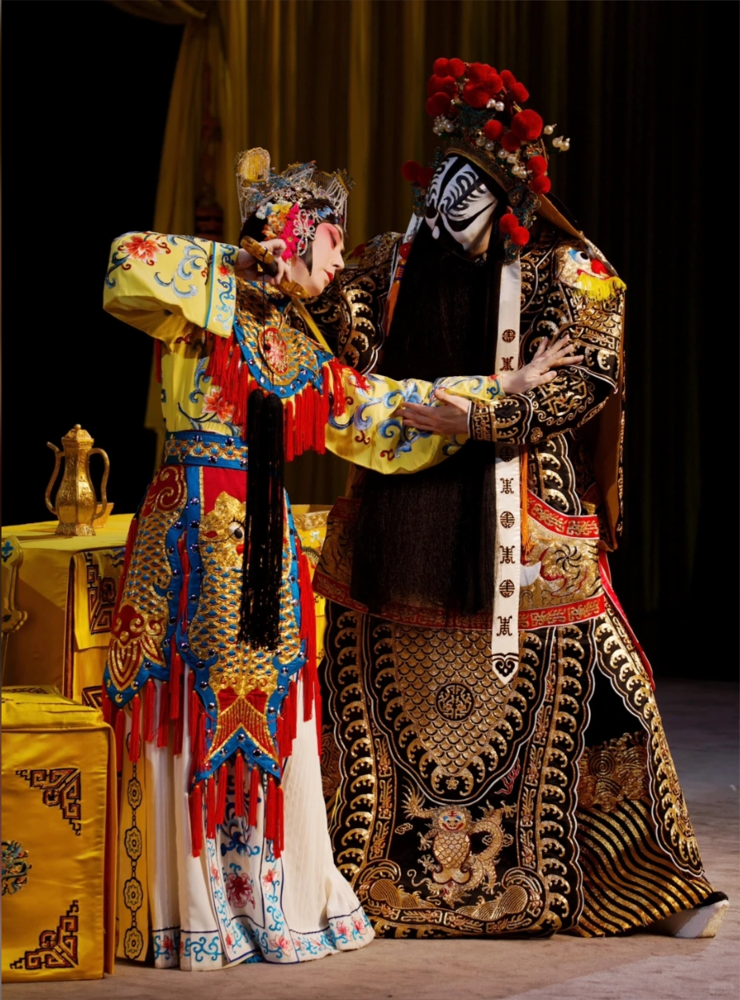

网站制作说明
为什么制作“梨园风华”
我选择中国京剧作为本次网站设计的主题，是因为京剧是我国的传统戏曲艺术，也是国家级非物质文化遗产。虽然以前对京剧了解不多，但在查找资料和制作网站的过程中，我逐渐认识到了京剧丰富的文化内涵和艺术价值。

我选择中国京剧作为本次网站设计的主题，是因为京剧是我国的传统戏曲艺术，也是国家级非物质文化遗产。虽然以前对京剧了解不多，但在查找资料和制作网站的过程中，我逐渐认识到了京剧丰富的文化内涵和艺术价值。
确定京剧非遗文化方向与八页结构。
分类处理图片、视频与音频素材。
建立红、金、米白的中国风系统。
调整桌面、平板与手机端布局。
在制作京剧文化网站的过程中，我不仅学习了网页设计的基本知识，也更加了解了中国传统文化的魅力。从查找资料、整理内容，到设计页面和调整样式，每一个环节都需要认真完成。遇到问题时，我学会了自己查资料、分析原因并不断尝试解决。